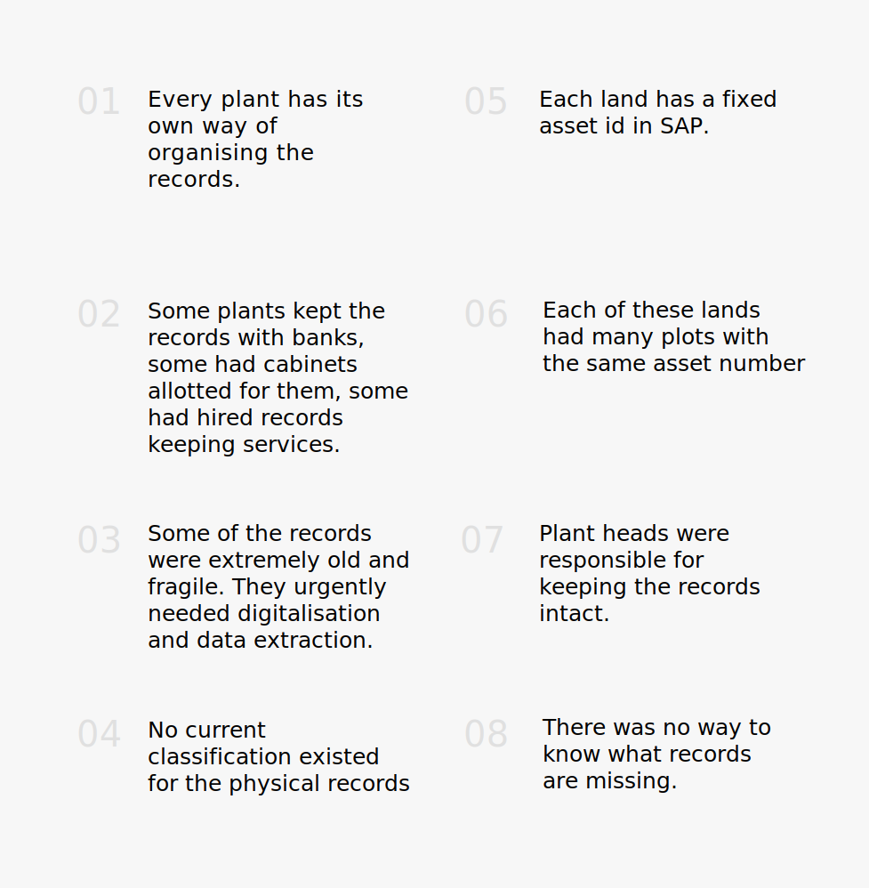
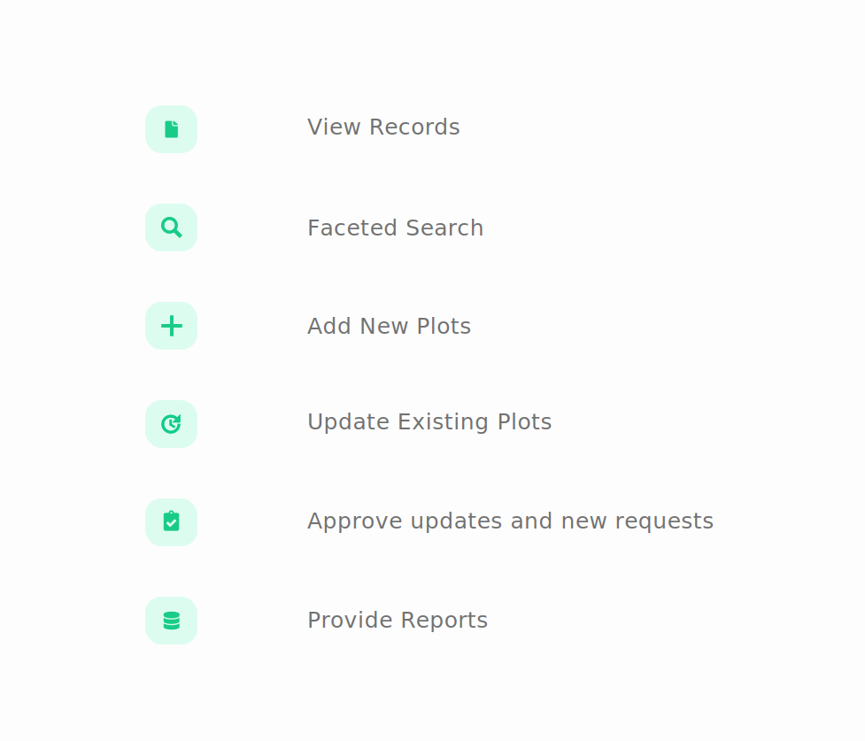
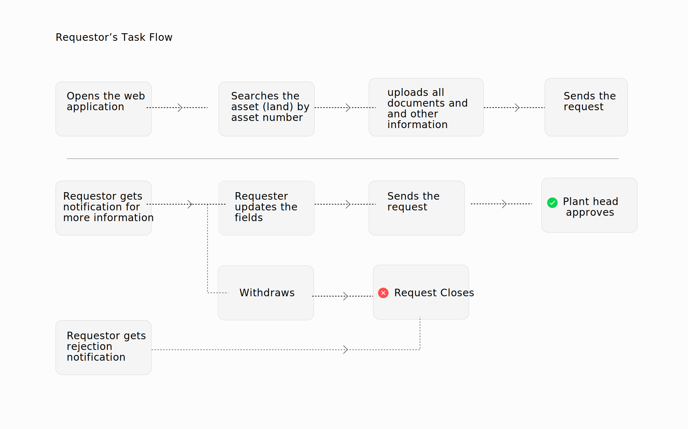
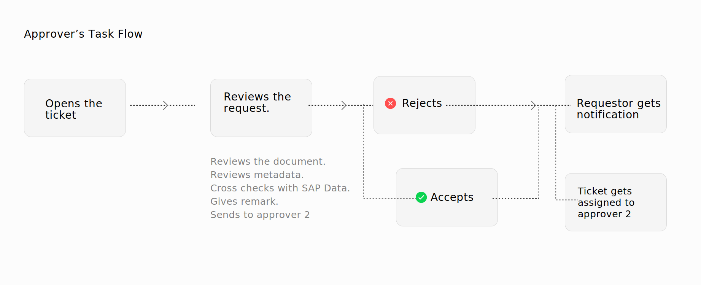
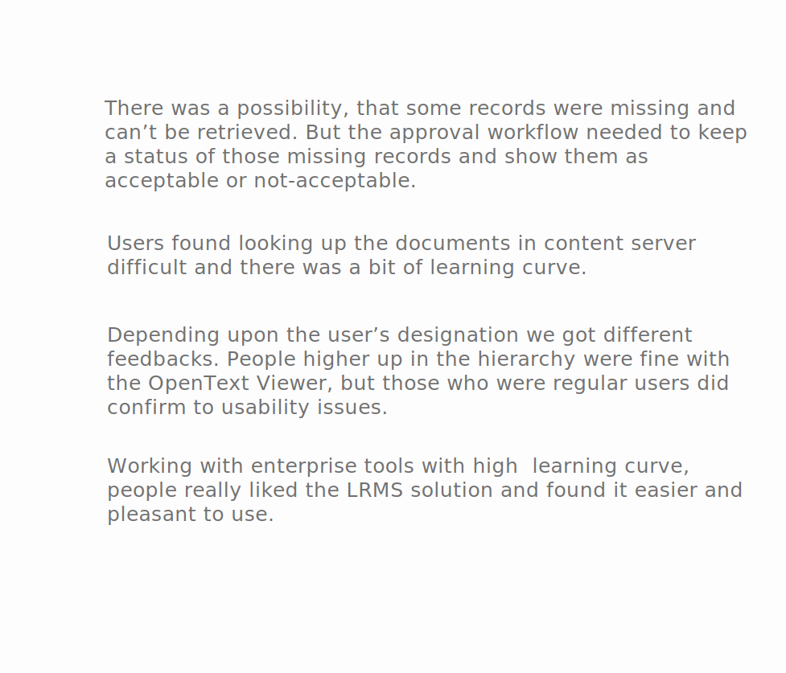

Land Records Management
UXD & Research — Mar'16 - Dec'17 — My Role — Researcher & UX Designer — Tools — Axure RP, Whiteboard, HTML & CSS
Overview
Problem
The client had recently acquired two really old cement companies in India. These two companies had a significant amount of land which they had bought over time. These lands were in the form of owned land, leased lands from third parties and governments. The client wanted help with organising, managing and archiving these land records so that in case of legal conflicts they could track the records and prove their ownership.
Solution
We designed a web based application to help business users upload and update records via proper approval channel and eventually archive the document. The portal leveraged the existing archival system of the client and their enterprise tool (SAP).
01
Records Management
The solution helped users look up lands and plots and make changes to them. The changes included land details and record archiving.


02
Approval, Tracking & Email Notification
Each change or new upload, went through thorough checking to ensure, authenticity and eliminate mistakes. This also ensured, a proper communication channel around each upload/change.
03
Integration with SAP & OpenText
The solution was built in close integration with SAP GUI and OpenText Content Server. All records uloaded, eventually were archived in OpenText.

Understanding the Problem
Focus Group with Tertiary Users
We first organised a focus group with the tertiary users as they were the ones taking most of the decisions with land records and would be dealing with the legal consequences and implications. The focus group consisted of two IT heads and business heads from different tracks.

Focus Groups - Primary Users
We conducted a focus group with the plant heads of the two subsidiary companies. There were in total of 40 representatives from 40 different plants. We were two researchers and manager to conduct the study. We found the following insights from this activity

User Groups
After our analysis, we arrived at 3 user groups for our land records management solution. First one was the requestor, who could be anyone from the respective plant, second user group was that of approver, which in all cases was the plant head, and the third type of user who is not familiar with day to day work of the plants but is expert in law.
Consolidated Design Implications
Broad Functionalities
Based on our findings during the focus group, we decided the core tasks that our solution will allow users to complete.

New Process Flow - Solution Architecture
At this stage wanted to have a logical architecture for ourselves, encompassing all touch points and technologies. This included, understanding working of SAP, SAP Gui, understanding Financial Assets in SAP, and OpenText Archival System. We worked our way around these constraints to provide user-centered experience.
Task Flows
Next we created broad task flows for various user groups. The task flow included the three user groups, namely requesters, approver from the plant and the legal team. The design and task flow also required system level understanding. For example, to upload a new record, the Asset Master must already exist in SAP. We came to know that the Land already exists in SAP as Asset. The legal requirements and consistency, required linking the Asset in SAP with the records and data in the LRMS solution.
 Wireframes
We had following goals when we set out to get user feedback.
High-fidelity Prototype
We made our high -fidelity prototype for testing in Axure RP. The design was presented to the plant heads and IT heads before moving to development. We needed their approval/sign off on the design to move ahead with making functional prototype.

Evaluation
Onsite Think-out Loud Sessions
We tested our Axure Prototype with IT people from the client's side. Given the work load of the business users, we weren't able to conduct testing with the primary user. Most of the feedback we got were on UX writing and more detailed nuances on the technicality of the processes and tasks.
Feedback &
Re-designing the Interaction

Interactive Prototype
Lessons Learned
Being one of my first design projects with real client, I was lucky to get such a great responsibility. But at the same time, looking back at it, I would have done a lot of things differently. In traditional companies, UCD is still not very common and the development lifecycle followed waterfall method, which complicated things even more.
- Adocate and persuade the client to provide access to the business users for testing.
- We faced challenges during the development of the product. A better organised communication channel between developer and the designer is necessary, in order to translate the design 100% to a fucntional product.
- We weren't able to push for a lot of design features because of existing constraints and platforms already chosen by the vendor. Having learned HCD in depth now, I would have been able to advocate for better solution around third-party integrations.
Designed and crafted with 
Copyright © 2020 pragati singh